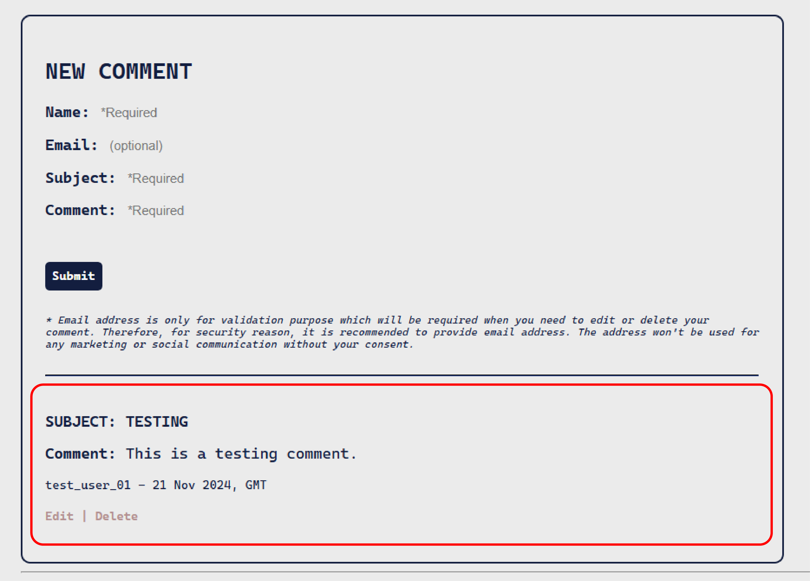

Connecting My frontend and backend (testing via local server)

Image source: Dribbble / Artist: Vucko
Table:
Step 00 | Preparation
-
After I created my frontend content ( see the article [Creating the frontend of my website with Github Page]), and configuring backend API endpoints ( see the article [Creating backend for my website]), it is time to connect them !
💡 At the moment, everything will still be tested locally with a local server IP address. The HTML website that is deployed through GitHub Page will only still remain as a pure static frontend website. In the next article I will show how configure an API with your own DNS.
- Opening up the JavaScript connected to the HTML file of the web page and adding the following functions step by step, which will allow the web page show all the comments, update a comment, add a comment and delete a comment.
Step 01 | Configuring Base Variables
-
const url = new URL(location.href);: Creating new URL to interact with the API.- Extracting Query Parameters: You can extract query parameters from the URL to send them as part of an API request.
- API Endpoints: You can use parts of the current URL to construct API endpoints dynamically.
- URL Components: You can parse and manipulate different components of the URL (e.g., protocol, hostname, pathname) to use in API requests.
const APILINK = 'https://localhost:8000/api/v1/comments';: The base URL of the API that endpoints will use to interact with data.const main = document.getElementById("commentsSection");: Referencing to the placeholder in the web-page where the requested data will be displayed.
Step 02 | Creating the form for collecting the data
-
const div_new = document.createElement('div');: The syntax will dynamically create a new web section using HTMLdivwhich contains the web-form. The div will be stored in the variablediv_new. innerHTMLis the property ofdiv_new, which contains a string parsing a series of HTML elements that forms the comments (or feedback) form.main.appendChild(div_new)is the step that will add the new created section into the DOM of the main HTML body.
Step 03 | Create Function to Display all the Feedbacks
- In general, the function fetches feedback data from an API url endpoint and dynamically creates HTML elements to display those feedbacks on a webpage.
- Fetch API Call:
fetch(url)initiates an HTTP GET request to the specified URL.- The response is then converted to JSON using
response.json().
- Handling the Fetched Data:
- The fetched array of feedback data is processed in the
.then(function(data){...})block.console.log(data);logs the fetched data to the console for debugging purposes.
- The fetched array of feedback data is processed in the
- Iterating Over Comments:
data.forEach(comment => {...})iterates over each comment in the fetched data array. For each comment, a newdivelement (div_card) is created to hold the comment details.
-
Formatting and Inserting Comment Data:
const comment_id = comment._id;extracts the feedback's unique ID in the MongoDB.const formattedDate = formatDate(comment.date);formats the comment's date using aformatDatefunction (defined later).div_card.innerHTML = ...sets the inner HTML of thediv_cardwith the comment's details, including subject, text, commentator's name, and formatted date.- The HTML also includes "Edit" and "Delete" links with
onclickhandlers to triggershowEmailVerificationfunction (defined later) with appropriate parameters.
-
Appending to Main Container:
main.appendChild(div_card);appends the newly createddiv_cardto a main container element (main), the connected HTML web page in this case.
-
Error Handling:
.catch(error => {...})handles any errors that occur during the fetch operation.console.error('Error fetching comments:', error);logs the error to the console.alert('Error fetching comments. Please try again.');displays an alert to the user indicating that there was an error fetching the comments.
Step 04 | Create Function for Feedback Editing Form
- This function is designed to enable the editing of a comment on a webpage.
-
Element Selection:
- An HTML element is selected by its
idusingdocument.getElementById(id)and assigns it to the variableelement.
- An HTML element is selected by its
-
Input IDs Creation:
- Unique IDs are assigned for the input fields by concatenating the
idparameter with specific strings (subject,comment_text,name,email,
verify_email).
- Unique IDs are assigned for the input fields by concatenating the
-
Inner HTML Update:
- The function updates the
innerHTMLof the selected element to include input fields pre-filled with the providedname,email,subject, andcomment_textvalues.
- The function updates the
-
Save Link: It adds a "Save" link that, when clicked, calls the
saveCommentfunction (defined later) with the IDs of the input fields and the originalid. The edited comment then will be saved.
Step 05 | Create Function to Save the Updated or Newly Added Feedback
- The function is designed to save a comment/ feedback to a backend server.
-
Function Parameters:
- Inherit the IDs of the HTML input elements
nameInputId,emailInputId,subjectInputId,commentInputIddefined in the editComment function, from which the function will retrieve values. id: An optional parameter that, if provided, indicates an existing comment to update; otherwise, a new comment will be created.
- Inherit the IDs of the HTML input elements
-
Retrieve Input Values:
- The function retrieves the values from the HTML input elements using
document.getElementById().valueforname,
email,subject, andcomment_text.
- The function retrieves the values from the HTML input elements using
-
Determine HTTP Method and URL:
- If
idis provided, the HTTP method is set to'PUT'(for updating an existing comment) and the URL is constructed using theid. - If
idis not provided, the HTTP method is set to'POST'(for creating a new comment) and the URL is set toAPILINK.
- If
-
Send HTTP Request:
- An HTTP request then will be sent to the server using the
fetchAPI. -
- The request includes:
method: Either `'PUT'` or `'POST'`.headers: Specifies the content type as JSON.body: A JSON string containing thename,email,subject,comment_text, andarticle.
- An HTTP request then will be sent to the server using the
-
Error Handling:
- If the response is successful (
response.ok), it logs a success message to the console and reloads the page. - - If the response is not successful, it logs an error message to the console with the response status text.
- If the response is successful (
Step 06 | Create Function to Delete a Comment
-
The function deletes a comment by its
id. -
Fetch API Call:
- The function uses the
fetchAPI to send an HTTP DELETE request to a specified URL, constructed using a baseAPILINKand the providedid.
- The function uses the
-
Await Response: As this is an asynchronous function, the
awaitkeyword paring withasyncpauses the function execution until thefetchrequest completes and returns a response. -
Error Handling:
- The function checks if the response is successful (
response.ok). - Success Case: If the response is successful, it logs a success message to the console and reloads the page using
location.reload(main). - Failure Case: If the response is not successful, it logs an error message to the console with the response's status text.
- The function checks if the response is successful (
💡 An asynchronous function is a function that operates asynchronously via the async keyword, allowing the use of await within it. This means the function can pause its execution while waiting for a promise to resolve, without blocking the main thread. This is useful for performing tasks like network requests or file I/O, which can take time to complete, without freezing the user interface or other operations.
Step 07 | Create a Simple Verification Function to enhance security
- This pair of functions are used to verify a user's email before allowing them to perform actions such as editing or deleting a comment.
-
showEmailVerification(commentId, action)Function:- Get the Element by ID:
The function takes two parameters:commentIdandaction. It retrieves the Feedback HTML element with the ID (commentIddefined in thereturnComments(url)function) usingdocument.getElementById(commentId). - Append HTML for Email Verification:
It appends a new HTML block which contains an input field for the user to enter their email and a link that triggers theverifyEmailfunction when clicked.
- Get the Element by ID:
-
verifyEmail(commentId, action)- Retrieve and Process Input:
The function takes two parameters:commentIdandactionto retrieve the value from the input field with the IDverifyInput-${commentId}. - Fetch Comment Data:
It sends a GET request to API endpoint to fetch the comment data viacommentId. - Handle Response:
If the response is successful (response.ok), it parses the response as JSON to get the comment data. It logs a success message to the console. -
Email Verification:
- It compares the stored email (from the fetched comment data) with the input email.
- If they match, it performs the action specified by the
actionparameter:- If
actionis 'edit', it callseditCommentwith the comment details. - If
actionis 'delete', it callsdeleteCommentwith thecommentIdand input email.
- If
-
If they do not match, it alerts the user and appends an error message to the HTML element with the ID
commentId.
-
Error Handling:
If the response is not successful, it logs an error message to the console.
- Retrieve and Process Input:
Step 08 | Forcing Date Format Shown in the Display From
- The function takes the date string stored in the MongoDB collection as input and returns a formatted date string.
-
Options Object: An
optionsobject is created to specify the formatting options for the date. -
Date Object: A
Dateobject is created from the inputdateString. - Regional Standard Format Enforcing: The
toLocaleDateStringmethod is called on theDateobject, with'en-GB'(British English) as the locale and theoptionsobject to specify the format.
Step 09 | Calling the function for returning all relevant Data
-
The syntax adds an event listener to the connected web page that listens for the
DOMContentLoaded event. -
() => returnComments(APILINK): When the initial HTML document has been completely loaded and parsed, it calls thereturnCommentsfunction with the API url.
Step 10 | Run the Node.js Engine to activate the api connection for testing the functions
Step 11 | Test through the frontend interface
- Filling in the comment form in the webpage to see if the value is returned and displayed below the form. This means the GET and POST API endpoints are working as well as the saveComment function. 
- You will find the raw data has now showed up in the data collection on MongoDB portal. Making sure you are at the right project, cluster and data collection.
-
Try to update it to test the verification function and the function associating with the PUT API endpoint.
- click “Edit”.
- Filling the email that is the same as the one when the comment was made, and then click “Verify”.
- The form will enter the editable mode if the verification is successful. Clicking “Save ” after the comment has been updated.
- The comment now had been updated.
-
Trying to delete it, which will also allow you to test the verification function.
- click “Delete”.
- Filling the email that is the same as the one when the comment was made, and then click “Verify”.
- The comment now had been deleted.
💡 Please refer to my GitHub repository to look at the full code.